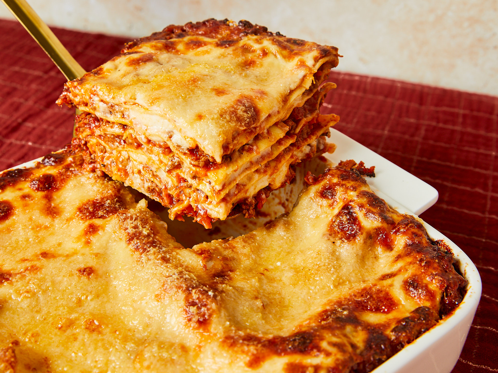

Lasagna

Description
There's nothing like a warm, hearty lasagna to bring everyone to the table! This classic lasagna recipe is packed with layers of rich, meaty sauce, creamy ricotta, and gooey mozzarella. Perfect for family dinners or special gatherings, it's comfort food at its finest. Whether you're a seasoned cook or trying it out for the first time, this step-by-step recipe will guide you through creating a delicious lasagna that's sure to impress. Grab your favorite glass of wine and get ready to enjoy a slice of Italian-inspired heaven!
Ingredients
- Lasagna noodles
- Ground beef 500g
- Onion (1, diced)
- Garlic (2-3 cloves,minced)
- Crushed tomatoes (2 cans, 400g each)
- Tomato paste (2 tablespoons)
- Italian seasoning (1 tablespoon)
- Ricotta cheese (500g)
- Mozzarella cheese (500g, shredded)
- Parmesan cheese (1/2 cup, grated)
- Egg (1, beaten)
- Olive oil (2 tablespoons)
- Fresh basil or parsley (optional for garnish)
- Salt and pepper to taste
Steps
- Preheat the oven to 180°C
- Cook the lasagna noodles
- Prepare the meat sauce:
- Heat olive oil in a large pan over medium heat
- Add diced onion and minced garlic, saute until softened
- Add ground beef and cook until browned, breaking it apart as it cooks. Season with salt, pepper, and Italian seasoning.
- Stir in crushed tomatoes and tomato paste. Simmer for 15-20 minutes to let the flavors combine. Optional: add red pepper flakes for extra heat.
- Mix the ricotta filling
- Assemple the lasagna
- Top with cheese
- Bake:
- Cover the dish with foil and bake for 25 minutes
- Remove the foil and bake for an additional 10-15 minutes, or until the cheese is bubbly and golden brown.
- Rest and Serve
Enjoy!